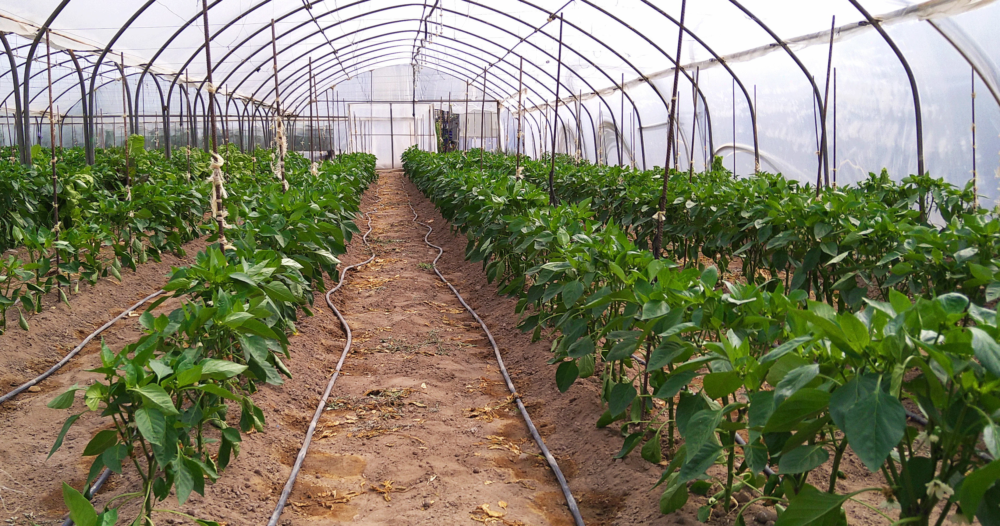

En los terrenos arenosos de El Perelló, en la comarca de la Ribera Baja de Valencia, se cultivan los tomates que según dicen son los mejores del mundo. La zona de cultivo del tomate de El Perelló como marca se extiende desde El Perellonet hasta casi Cullera, sobre una franja de tierra casi dunar que separa el Parque Natural de la Albufera junto a los arrozales del Mar Mediterráneo.
El tomate de El Perelló es precioso, compacto, terso y no sueltan agua al cortarlo. Este tomate destaca por su textura, por ser muy carnoso, con muy pocas semillas, la piel fina, un sabor en boca muy dulce y poca acidez. Los expertos apuntan a que es la arena de las tierras donde se planta y las aguas salitrosas del riego las que potencian estas cualidades hasta hacerlos únicos.
Las primeras plantaciones de la temporada son a principios de Enero obteniendo sus frutos entre finales de Abril y Julio, a lo sumo hasta primeros de Agosto. Es una variedad autóctona temprana que se viene recuperando desde hace una década y que nada tiene que ver con los híbridos tan de moda en estos momentos.
Para que un tomate esté bueno ha de madurar en la mata, de nada vale recolectarlo verde y que madure en cámaras.
El Perelló cuenta con su feria gastronómica, que en su última edición vendió 15.000 kilos de tomate en cajas de 2 ó 3 kilos a los más de 20.000 visitantes.

Verdura Mediterránea
En los años 70, se produjo la primera revolución agrícola con la unión de los productores en una comercialización única que en 1975 culminó con un código de calidad común en torno al tomate, estrella
de una variedad de cultivos que se inició junto a la patata y la sandía y que fue ampliándose con el pepino, el calabacín y las distintas variedades de pimiento, todas ellas en los meses de verano.
Verdura Oriental
A comienzos de los años noventa, una pequeña empresa de L'Horta, con un chino al frente, recurrió a los vecinos productores de El Perelló para crecer en la producción y exportación de hortalizas orientales. El acuerdo cambió la planificación productiva y sentó las bases de una agricultura inteligente que huía de los excedentes y respondía a las necesidades de consumo.
Así se distribuyó entre los socios de la cooperativa la producción de las 15 variedades de verduras orientales que se exportan a Francia, Italia, Alemania, Holanda y Suiza entre octubre y mayo, los meses en que estos países no pueden producirlas.